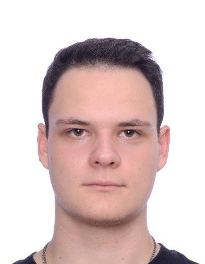

Михаил Каранинский
DevOps Engineer
1 год 10 месяцев опыта
Специализируюсь на автоматизации и оптимизации процессов разработки. Имею опыт работы с широким спектром инструментов для создания стабильной и масштабируемой инфраструктуры.
Опыт работы
1 год
DevOps-инженер
Зерно Агрегатор, Москва
Виртуализация и инфраструктура:
Администрировал серверы на VMware и Proxmox, использовал Terraform, Ansible для IaC
Облако и построение инфраструктуры с нуля:
Организовал переезд из VMware в облако Timeweb. Развернул с нуля инфраструктуру: Nginx с автоматическим обновлением SSL-сертификатов, GitLab + Runners, Harbor, Vault, PostgreSQL с pgAdmin, MinIO S3, SSO на базе Authentik
Автоматизация и резервные копии:
Разработал Ansible роли для бэкапов PostgreSQL с ротацией и сохранением в MinIO. Автоматизировал задачи деплоя с помощью Ansible, Terraform и CI/CD
Мониторинг и логирование:
Настроил мониторинг на базе Grafana + Prometheus, Sentry. Реализовал логирование через Loki, Alloy
9 месяцев
DevOps-инженер
ЦВА
Автоматизация и скриптинг:
Разработка скриптов на Bash и Playbook-ов на Ansible для автоматизации развертывания и настройки инфраструктуры
CI/CD:
Настройка и поддержка CI/CD пайплайнов с использованием GitLab CI/CD. Управление и администрирование self-hosted GitLab, включая настройку GitLab Runners и Docker Registry
Контейнеризация и оркестрация:
Управление контейнерами с помощью Docker, Docker Compose и Podman. Использование Kaniko для сборки Docker-образов внутри k3s
Достижения:
• Оптимизировал CI/CD процессы, использовал multistage в Dockerfile, сократив размер образов на 30-50%
• Настроил PostgreSQL с Patroni для высокой доступности
• Развернул GitLab на новом сервере под управлением ProxMox с миграцией данных
Технические навыки
Языки программирования
Python, Bash, JavaScript, SQL, Golang
DevOps инструменты
Docker, Kubernetes, Ansible, Terraform, GitLab CI/CD, Helm
Контейнеризация
Docker, Docker Compose, Podman, Kaniko, Harbor
Мониторинг
Prometheus, Grafana, Node Exporter, Sentry, Loki, Alloy
Сетевые технологии
Nginx, HAProxy, SSL-сертификаты, VPN, DNS
Базы данных
PostgreSQL, pgAdmin, Patroni, MinIO S3
Облачные платформы
Timeweb Cloud, VMware, Proxmox
Операционные системы
Ubuntu, Debian, Astra Linux, RedOS, ALT Linux, openSUSE
Автоматизация
Ansible, Terraform, Jinja2, Bash скрипты
Безопасность
Vault, Authentik SSO, SSL/TLS, централизованное управление доступом
Web фреймворки
Django, Django REST Framework, FastAPI
Инструменты разработки
Git, GitLab, Docker Registry, Semaphore UI
Образование
Бакалавр (2024)
Уфимский университет науки и технологий
Институт информатики, математики и робототехники
Прикладная информатика
Python-разработчик плюс (2024)
Яндекс Практикум
Повышение квалификации